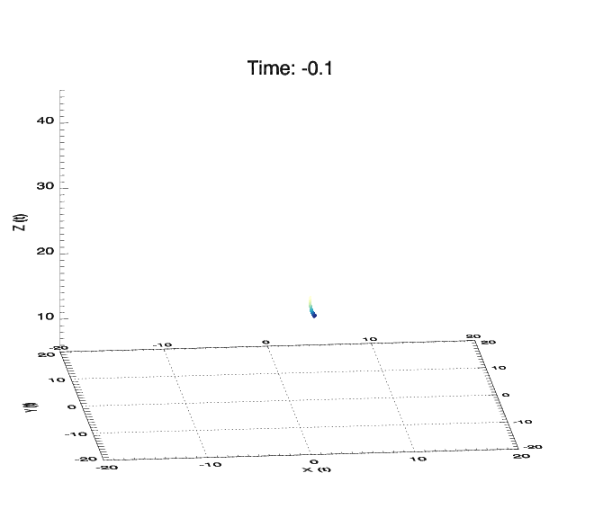
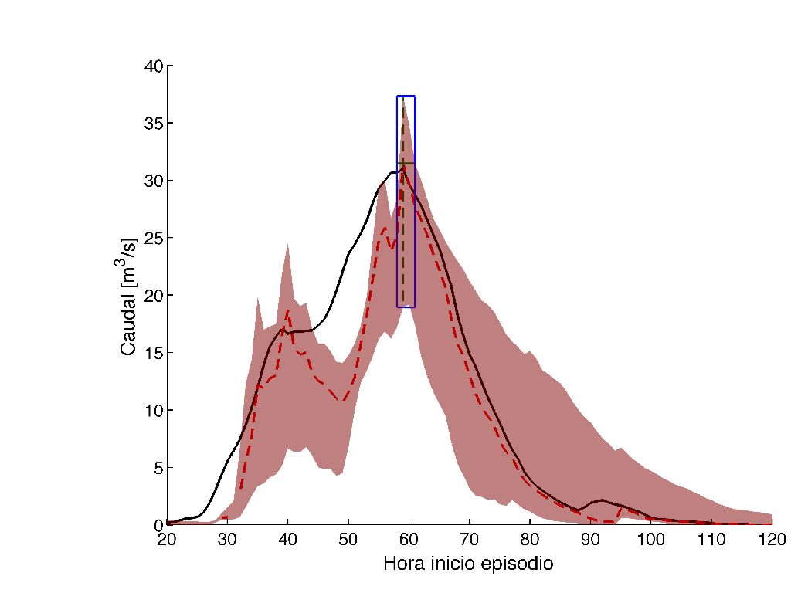

Scientific Researcher specializing in Nowcasting & AI.
Based at GeoSphere Austria, I focus on developing probabilistic analysis and seamless forecasts for high-impact weather warnings. As a member of the EUMETSAT NWC-SAF steering group and WMO/OSCAR Point of Contact, I bridge global standards with operational excellence.
Teaching AI & Lab
Interactive programs and meteorological notebooks.

Convective Nowcasting
Transformer-based models for multi-source precipitation analysis.

Verification Scales
Probabilistic tools to determine predictable scales in ensemble systems.
Professional Experience
2026 – Pres
Scientific Researcher
GeoSphere Austria, PostProcessing and AI CU
2023 – 2025
Head of Nowcasting Competence Unit
GeoSphere Austria